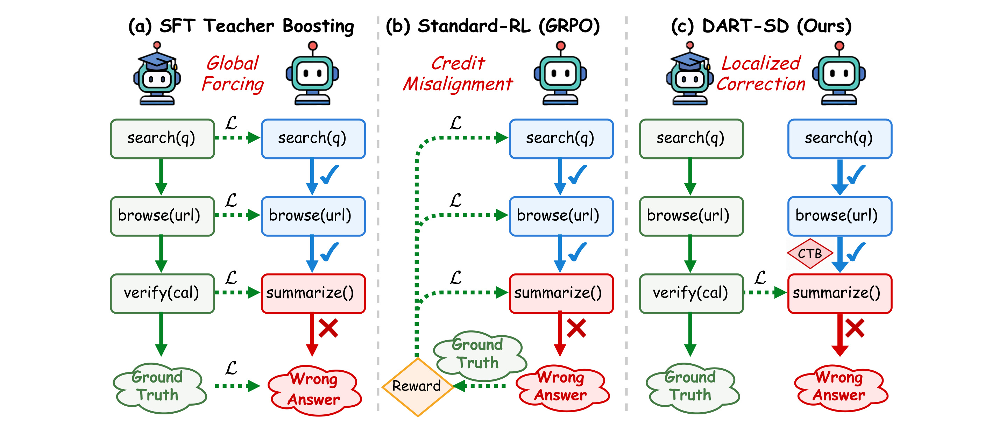
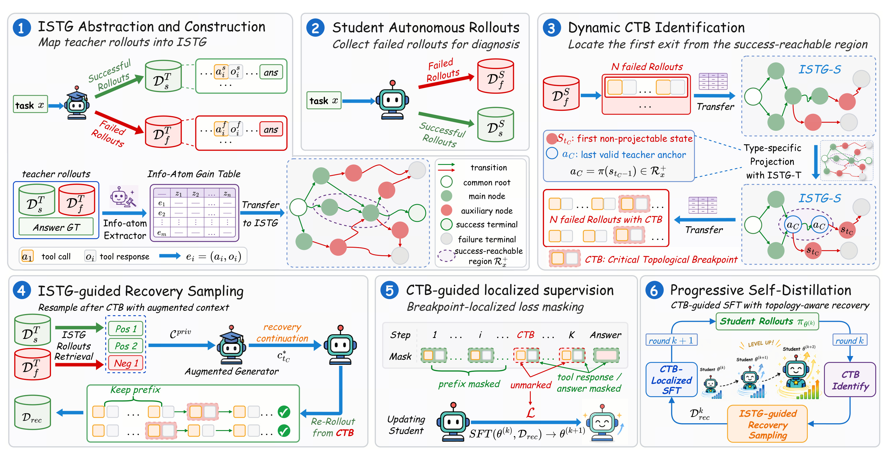
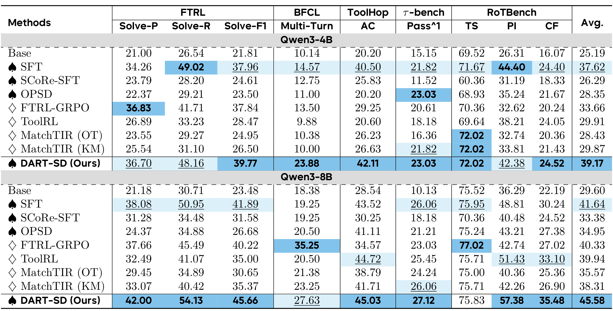
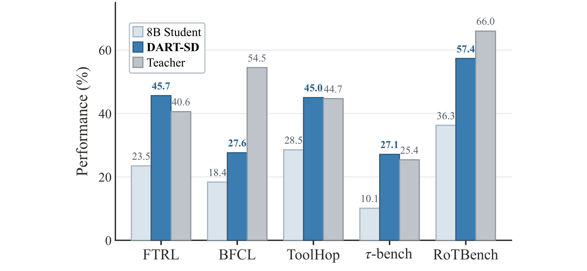
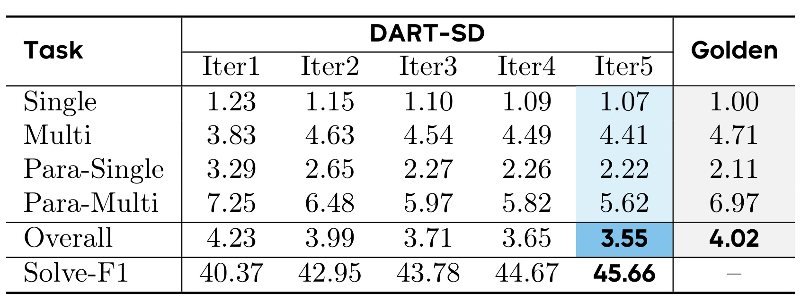
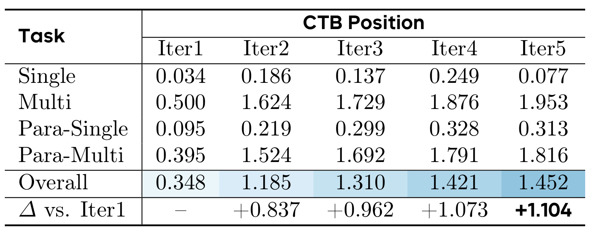
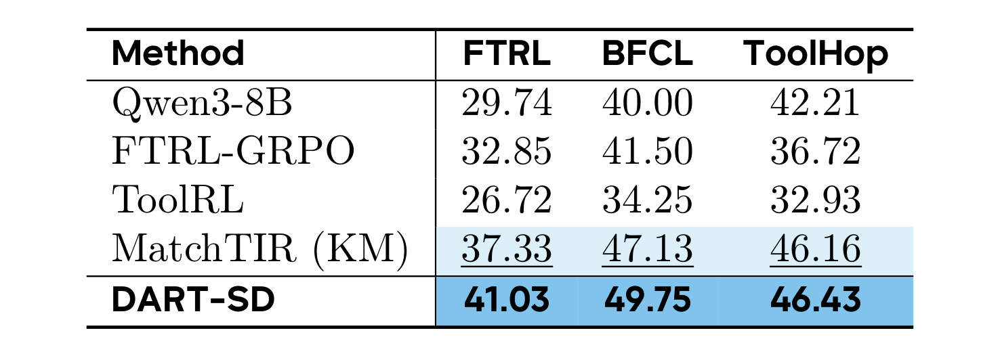
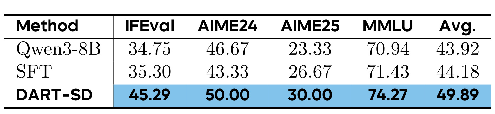
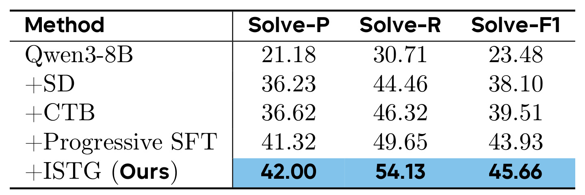

DART-SD：面向多轮工具调用 Agent 自蒸馏的菱形拓扑检索与调优
DART-SD 的英文全题是 DART-SD: Diamond-topology Aware Retrieval and Tuning for Self-Distillation of Multi-Turn Tool-Calling Agents。论文由 Hangrui Xu、Jiarui Wang、Yang Yang、Chuanbo Zhu、Fangda Chen、Ziqi Wu、Jingming Cai 与 Yan Song 合作完成，一作主机构为 ByteDance，University of Science and Technology of China 是合作机构；arXiv 首次公开日期为 2026-08-19。论文入口见 arXiv:2608.18524。本轮未核验到独立代码或项目页，因此下面对实现细节的讨论只以论文正文、公式和实验表为依据。
多子目标工具任务往往允许不同的正确执行顺序，其成功空间会分叉后再汇合成组合式菱形格；把这种空间压成一条教师轨迹做全局模仿，会把学生已经正确的替代探索也当成错误覆盖，标准强化学习的稀疏终局奖励又会把失败后果平均摊给此前的有效步骤，最终造成策略多样性与已有能力同时受损。
1. 背景和问题
1.1 多轮工具蒸馏为何不是普通序列模仿
工具调用 Agent 与单轮问答的主要差别，不只是序列更长，而是动作会改变后续可见环境。模型先调用搜索工具获得候选事实，再访问某个页面、校验日期或参数，工具响应又成为下一步决策的条件。前沿大模型能够依靠规模和强推理完成这种闭环，但将能力迁移到 Qwen3-4B、Qwen3-8B 一类更小模型时，常见做法仍是行为克隆或 SFT：拿一条成功教师轨迹，把每一个 assistant token 都当作唯一正确答案。长程任务只要学生在某一步选择了另一个同样合理的工具，后面的 observation 和 teacher forcing 上下文就会错位；全轨迹损失并不会判断学生已经获得了哪些必要事实，而会继续要求它复现教师那条具体路径。
论文把这个矛盾进一步精确化为“拓扑坍缩”。设任务需要取得若干彼此独立的信息，例如先查汇率再查价格，或反过来先查价格再查汇率，两条路径在获得同一组事实后应落到同一个累计状态。若有多个可交换子目标，路径数量会组合式增长，结构是多次分叉、重汇合的菱形格，而不是一棵永不汇合的动作树，更不是一条线。线性 SFT 把一个拓扑等价类压成单一序列，会错误惩罚其他正确排列；学生越有自己的可用策略，越可能遭到破坏性梯度。传统 hindsight 蒸馏即便在失败后提供提示，若仍按严格时间步对齐，也没有解决“不同动作序列可到达同一信息状态”的根本问题。
强化学习看似不需要模仿固定轨迹，但这里同样存在结构失配。FTRL-GRPO、ToolRL 等方法依赖稀疏结果反馈或把终局 reward 展开到整条轨迹。一次失败可能只由最后一个错误参数导致，前面的搜索、浏览和校验却一起收到负信用；反过来，一次成功也可能把偶然的冗余调用一并奖励。MatchTIR 试图用二分匹配提供 turn-level 信号，粒度更细，但论文认为它仍以线性 turn 对齐为中心，没有把累计信息状态的重汇合显式表示出来。DART-SD 的关键问题因此不是“怎样得到更多教师轨迹”，而是怎样判断学生从哪一步才真正离开可成功恢复的拓扑区域，并只纠正离开后的部分。

Figure 1 把三种信用分配方式落到同一条工具链。左侧 SFT Teacher Boosting 要求学生从 search、browse 到后续步骤整体复刻教师路径；即使学生前两步可用，只因第三步选择了另一条探索路径，全局 loss 也会反向覆盖此前行为。中间 GRPO 沿整条失败轨迹传播 reward，无法区分真正导致 wrong answer 的 summarize 与此前正确的检索步骤。右侧 DART-SD 则把 verify 后首次偏离成功支撑区域的位置标为 CTB，仅在该断点后生成并学习恢复步骤，绿色前缀不进入损失。这张图不是说前缀永远正确，而是说只有经过状态投影仍被成功教师图支持的前缀才受到保护；“局部”由拓扑可达性决定，而不是按固定的最后若干 token 截断。
1.2 论文要回答的三个可检验问题
第一，怎样定义一个对工具顺序不敏感、又不会把无效操作完全丢掉的交互状态？只用当前 action 太脆弱，只用已获得事实又会忽略学生连续试错所消耗的深度。第二，怎样从教师成功与失败 rollout 中找出 student 的 Critical Topological Breakpoint（CTB）？若直接让 LLM judge 判某一步是否错，判断本身既昂贵又可能不一致；若只与教师动作逐步匹配，则再次落回线性对齐。第三，找到断点后怎样生成可执行的恢复续写，同时保证 loss 不穿过断点去修改有效 prefix？这要求检索、数据构造和 token mask 三层彼此一致。
这些问题对 Agent 训练的价值在于，它们把“失败轨迹也有价值”从口号变成可操作边界：失败前可能包含正确的信息收集，失败后才需要教师支撑的 recovery。对推荐与检索系统也有直接迁移意义。一次多轮搜索或推荐会话可能以不同顺序完成意图澄清、约束获取、候选检索和属性核验；如果只把一条人工日志当唯一 ground truth，模型会过拟合界面顺序。DART-SD 提示我们应先建立“累计得到哪些对决策有用的信息”的状态，再在首次离开成功可达区域处训练，而不是给整段 session 一个统一标签。不过这仍是由有限教师 rollout 诱导的经验拓扑，并不等于真实最优状态空间，后文实验和局限都要围绕这一点审视。
2. 方法
DART-SD 的整体链路依论文原顺序可读成六个动作：从教师成功/失败轨迹抽取信息原子并构造 ISTG；让当前学生自主 rollout；把学生状态投影到预算过滤的 success-reachable region 以定位 CTB；从图中取成功支撑的恢复参考；保留 CTB 前真实学生上下文，只对恢复 assistant step 建立 loss mask；更新学生后重新 rollout，逐轮把断点推向更深位置。ISTG 解决“哪些路径在状态上等价”，CTB 解决“从哪里开始纠错”，局部监督解决“梯度写到哪里”，progressive loop 则解决“静态一次纠错无法跟随学生能力边界变化”。

Figure 2 左上先把教师 rollout 的 tool call/response 转成信息原子增益表，成功与失败轨迹共享根节点，并在同一 ISTG 中保留主节点、辅助节点和两类 terminal。右上学生失败 rollout 经过相同状态更新后，按节点类型投影到绿色成功可达区域，第一枚无法投影的红色节点就是 CTB，其前一状态的教师投影是恢复锚点。左下检索两个正参考和一个负参考等特权上下文，Augmented Generator 不直接拼接异构轨迹，而是在学生 prefix 上生成恢复 continuation。中下 mask 仅点亮 CTB 后、最终答案前的 assistant response；右下把 rollout、CTB 定位、ISTG-guided recovery 和 localized SFT 组成循环。图中信息流说明训练与部署不同：图检索和特权参考服务于训练样本生成，最终部署只运行更新后的学生策略。
2.1 信息原子、主辅节点与 ISTG 的菱形拓扑
ISTG 首先把工具响应从表面文本提升为 task-specific information atom。确定性阶段规范化结构化字段，并把只有状态信号、空值或占位值的响应认定为无信息；只要仍有一个实质字段，响应就保留。语义阶段在同一任务的全部候选响应、任务问题和一条成功 rollout 的联合条件下分配原子：
符号解释：$x$ 是任务，$e$ 是一次工具调用，$\operatorname{tl}(e)$ 表示工具身份，$\bar{o}(e)$ 是规范化响应，$\mathcal K_x$ 是任务的信息原子集合，$\alpha_x(e)$ 要么为空，要么只含一个原子。跨工具、跨措辞但提供同一事实的响应必须得到同一原子；无信息或未判断响应映射为 $\varnothing$。这样做的保守性很重要：残余判断误差更可能漏掉一个原子、使图变稀，而不是凭响应字符串发明一个不存在的状态和可达关系。一步可以包含单次或并发工具调用 bundle $B_t$，累计信息按下式更新：
符号解释：$I_{t-1}$ 是此前已取得的信息集合，$\Delta I_t$ 只含本步首次出现的新原子，$I_t$ 是并集后的累计状态。保护有效 prefix 与菱形拓扑的关系正落在这个集合并集上：若先获得 $k_a$ 再获得 $k_b$，或反过来先 $k_b$ 后 $k_a$，两条路径最终都到达 $\{k_a,k_b\}$；它们可以分叉再重汇合，而不会因 action 顺序不同被视为两个永久分离状态。但只看 $I_t$ 会把一次失败调用和连续五次失败调用当成同一节点，因此论文继续定义：
符号解释：$U_t$ 是自最近主节点以来无用操作的多重集；获得新信息时节点是 main，并令 $U_t=\varnothing$，没有新信息但发生操作时是 aux。任务级 ISTG 是有向多重图 $G_x=(V_x,E_x)$，成功和失败教师轨迹共享根，边保留一次或并发工具调用，terminal 标记成 success/failure。主节点构成信息获取骨干，辅助节点记录探索深度。不把无用响应按文本创建新原子，同时又用辅助节点保留其数量，正是图既能重汇合又不会掩盖反复试错的平衡点。
2.2 成功可达区域、类型投影与关键拓扑断点
并非成功轨迹上的所有节点都适合当恢复锚点：若离成功终点太远，学生即使投影成功，也可能在剩余预算内无法完成任务。令成功教师轨迹的最短深度为 $d_x^{\min}$，论文先设任务预算
符号解释：$\Delta_x$ 是允许超出最短成功路径的余量，$B_x^{\max}$ 是上限，$r_\tau(v)$ 是沿成功轨迹 $\tau$ 从节点 $v$ 到 success terminal 的剩余转移数，$\mathcal T_x^+$ 是成功教师轨迹集。注意预算按“离成功还剩多远”反向计算，而不是按“从根走了多深”计算；只在失败教师轨迹上出现的节点仍保留于 ISTG 供诊断，却不能进入 $\mathcal R_x^+$ 充当成功锚点。
主节点与辅助节点使用不同投影。学生主状态 $s_t=(I_t^s,U_t^s)$ 的候选锚点为
符号解释：教师节点的信息集合只需是学生累计信息的子集，不要求严格相等，也不比较无用操作分量；选择时取信息集合最大的兼容教师节点。这个子集条件允许学生多拿到一些不冲突的信息，又保留教师成功支撑。对辅助状态，先在兼容主节点中选信息量最大的 $m_t$，再要求
符号解释：$\operatorname{par}(v)$ 是辅助节点依附的可达主节点；投影只比较主锚和无用操作数量，不要求学生与教师调用同一个失败工具。这样能避免 action-wise 对齐，却仍可在学生过度试错时判定越界。若相应候选集合非空，$\rho_t=1$，否则为 0。CTB 定义成可投影到不可投影的第一次跃迁：
符号解释：$t_C$ 是 Critical Topological Breakpoint 的步号，$\pi(\cdot)$ 是有效学生状态到教师锚点的投影，$a_C$ 是离开成功支撑区域前最后的有效锚。若学生全程可投影但最终答案仍错，论文把 terminal 当修正边界，用最近有效投影恢复。CTB 不是“第一个和教师 action 不同的位置”，而是第一个无法由成功可达状态解释的位置；若信息集合仍兼容，替代顺序不会触发无谓纠正。
2.3 成功支撑的恢复生成与局部监督
得到 $t_C$ 与 $a_C$ 后，DART-SD 从教师图随机抽取成功和失败 trace 作为特权参考 $\mathcal C^{\mathrm{priv}}$。失败参考不是恢复目标，但能告诉生成器哪些局部走法会再次进入 failure terminal；成功参考提供 anchor 之后可到成功的 continuation。由于教师与学生可能采用不同工具顺序，论文不把参考轨迹生硬接到学生 prefix 后，而让增强生成器联合读取任务、学生真实前缀和特权参考：
符号解释：$\tau_{
符号解释：$\widetilde y_i$ 是训练序列第 $i$ 个 token，$p_\theta$ 是学生模型，$m_i$ 是由 response step 决定的 mask。只有属于 CTB 后且位于最终答案之前的 assistant response token 取 $m_i=1$；学生前缀、user message、tool observation 以及 final answer 都取 0。保护 prefix 因而是严格的梯度性质：前缀仍作为条件上下文参与恢复概率计算，却没有直接 token loss。最终答案不监督，意味着作者希望学到可迁移的工具行为而非特定答案文本；同时，这也把训练成败更多压在恢复 continuation 的质量上。
2.4 渐进式自蒸馏如何推动能力边界后移
一次局部 SFT 只能纠正当前模型的断点。更新后，学生会在旧断点处表现更好，新的首个失败位置可能向后移动；如果继续使用静态数据，训练就无法覆盖更新后的能力边界。DART-SD 在每轮让当前 checkpoint 重新生成 rollout，用同一任务级 ISTG 重放状态、投影、定位 CTB，再为失败轨迹构造局部恢复样本。这相当于以 CTB 为课程进度指针：已经掌握的前缀退出监督区，尚未掌握的后缀进入监督区。 论文实验实际进行五轮，每轮覆盖 FTRL 的 2,215 个训练任务，每任务采样 8 条轨迹，temperature 0.7，最长 4,096 token、最多 9 个交互 turn；随后以学习率 $5\times10^{-7}$、batch size 32 做一 epoch 局部 SFT。
这里要区分“自蒸馏”与“自我证明”。student rollout 提供当前错误分布，教师池 Qwen3.6-27B 与 GLM-5.2 的轨迹和分析仍提供外部能力支撑，ISTG 也由教师 rollout 构建；所以它不是完全无教师的自训练。训练阶段需要信息原子映射、图构造、状态投影和 AugGen，推理阶段则不需要访问 ISTG 或教师参考，只部署最终学生。这种训练/推理解耦有利于服务成本，却把相当多成本前置到数据生产：每轮至少产生约 2,215×8 条交互轨迹，还要处理工具环境、规范化响应与恢复生成。论文没有给出端到端训练时间或 ISTG 构建成本，工程复现时必须把这些部分单独计量。
3. 实验结果
3.1 五基准、双尺度与主结果
训练集采用 FTRL：它包含超过 2,000 个可验证工具环境，实验具体使用 2,215 个训练任务，并按 Single、Para-Single、Multi、Para-Multi 区分单问题、并行独立子问题、依赖多步子问题和并行/依赖混合结构。FTRL 同域测试用 Solve-P、Solve-R 与调和平均 Solve-F1；四个 OOD 基准分别是 BFCL（Base、Miss Function、Miss Parameter、Long Context 的 Multi-Turn 平均）、ToolHop（Answer Correctness）、$\tau$-bench（Pass^1）和 RoTBench（Tool Selection、Parameter Identification、Content Filling）。双骨干为 Qwen3-4B/8B，主要实验统一关闭 thinking，避免显式推理格式成为混杂因素。
Baselines 分两组：蒸馏组有标准 SFT、SCoRe-SFT、OPSD；RL 组有 FTRL-GRPO、ToolRL、MatchTIR-OT 与 MatchTIR-KM，另列未适配 Base。所有可训练方法都在 FTRL 上训练，再同时测同域和四项 OOD。这样的设计比只报同域成功率更有说服力，因为 DART-SD 的主张是从拓扑恢复中学到可迁移的工具行为。不过论文没有报告多随机种子标准差或显著性检验，表中差距应理解为该次受控实现的点估计。

Table 1 中，DART-SD 的 Avg. 在 4B/8B 分别为 39.17 与 45.58，两种尺度均为最高；标准 SFT 分别为 37.62 与 41.64，强 RL 基线 FTRL-GRPO 为 33.66 与 40.33。8B DART-SD 在 FTRL 的 Solve-F1 为 45.66，高于 SFT 41.89 与 FTRL-GRPO 40.22；BFCL Multi-Turn 27.63 低于 FTRL-GRPO 的 35.25，说明它并非每项都第一；ToolHop AC 45.03 略高于 ToolRL 44.72；$\tau$-bench Pass^1 27.12 为表内最高；RoTBench 的 PI/CF 为 57.38/35.48，明显高于其他训练法。4B 的 BFCL 23.88、ToolHop 42.11 和 Avg. 39.17 都显示小尺度仍能受益。最稳妥的结论是平均表现和多数指标领先，而不是宣称所有 benchmark 全面胜出。

Figure 3 进一步只取每个基准一个代表指标，比较 8B Base、DART-SD 和教师：FTRL 为 23.5/45.7/40.6，BFCL 为 18.4/27.6/54.5，ToolHop 为 28.5/45.0/44.7，$\tau$-bench 为 10.1/27.1/25.4，RoTBench PI 为 36.3/57.4/66.0。DART-SD 在 FTRL、ToolHop 和 $\tau$-bench 超过教师，但 BFCL、RoTBench 仍落后，尤其 BFCL 差距很大。这支持“结构化恢复可让小模型在部分任务上组合出比单条教师轨迹更有效的行为”，却不等同于整体教师能力蒸馏完成；不同 benchmark 的 API 形式、长上下文和参数鲁棒性仍决定上限。
3.2 渐进训练的效率与能力边界
只看成功率可能掩盖一种退化：模型用更多重复搜索换来更高分。论文因此跟踪每轮成功轨迹的平均工具调用长度，并与 FTRL 数据构造时的 golden 轨迹比较。

Table 2 显示整体平均工具调用从 Iter1 的 4.23 依次降为 3.99、3.71、3.65、3.55，而 Solve-F1 从 40.37 升到 42.95、43.78、44.67、45.66；最终 3.55 还短于 golden 的 4.02。Para-Single 从 3.29 降到 2.22，Para-Multi 从 7.25 降到 5.62，表明并行子目标中的冗余削减明显。不过 Multi 在 Iter5 为 4.41，略短于 golden 4.71；Para-Multi 最终 5.62 也显著短于 golden 6.97。Single 在 Iter5 为 1.07，golden 为 1.00，说明最简单任务没有神奇捷径。性能上升与长度下降共同排除了“纯粹增加调用预算”的解释，但轨迹更短不必然意味着推理更好，也可能遗漏某些未被现有 verifier 捕获的检查步骤。
论文的第二个机制探针是失败轨迹的 CTB 平均位置。若局部监督确实保护已掌握前缀并只推动边界后的恢复，下一轮首个不可投影状态应整体后移。

Table 3 中 Overall 从 Iter1 的 0.348 提升到 1.185、1.310、1.421、1.452，相对首轮最终增加 1.104。Multi 从 0.500 到 1.953，Para-Multi 从 0.395 到 1.816，长程依赖任务的边界移动最明显；Para-Single 只从 0.095 到 0.313，Single 还在各轮波动并于 Iter5 回到 0.077。这个结果与论文机制吻合：复杂任务中学生能维持更长的 success-supported prefix 后才需要恢复。但平均 CTB 是在“仍失败的训练轨迹”条件下统计，随着成功率变化，样本组成也在变；位置后移既可能来自同一轨迹改善，也可能来自早期失败样本转为成功后退出统计。若要更强的因果证据，应在固定任务与固定环境种子上做配对 CTB 迁移分析。
3.3 Thinking、通用能力与组件消融
主要实验关闭 thinking；作者另行让所有可训练 baseline 在 thinking 模式训练，Base 只在推理时开启。DART-SD 的教师轨迹在 thinking 模式生成，教师 reasoning trace 与 tool-call trace 一并放入恢复上下文。

Table 4 中 DART-SD 在 FTRL Solve-F1、BFCL Multi-Turn、ToolHop AC 上分别为 41.03、49.75、46.43，三项都高于 MatchTIR-KM 的 37.33、47.13、46.16，也高于 FTRL-GRPO 与 ToolRL。值得注意的是这些数值不能与 Table 1 的 no-thinking 行直接做单变量比较，因为教师数据、训练上下文与各 baseline 的 reasoning 配置一起改变；本表能证明的是拓扑局部监督在显式思考格式下仍可工作。ToolHop 上与 MatchTIR 的差距仅 0.27，远小于 FTRL 的 3.70，因此“thinking 模式全面大幅领先”并不成立。
工具专项训练还可能导致 instruction following、数学和知识能力遗忘，作者用 IFEval、AIME24、AIME25 与 MMLU 进行额外测试：IFEval 报 strict prompt-level accuracy，AIME 报 pass@10，MMLU 报 accuracy。

Table 5 中 Qwen3-8B Base 平均 43.92，标准 SFT 44.18，DART-SD 为 49.89；分项分别达到 IFEval 45.29、AIME24 50.00、AIME25 30.00、MMLU 74.27，均高于 Base 与 SFT。该结果与“mask 掉有效 prefix 能减少破坏性更新”相容，特别是 IFEval 从 34.75 提升到 45.29。然而它还不能证明通用能力提升完全由 prefix protection 引起，因为 AugGen 的教师分析、thinking 设置和五轮数据刷新都可能产生额外知识迁移；AIME 的 pass@10 也有采样方差。更严谨的对照应在相同恢复样本上仅改变 prefix 是否纳入 loss，并报告多次运行误差。
最后，Table 6 用累加组件消融拆开 DART-SD 的增益来源。

从 Qwen3-8B Base 的 Solve-F1 23.48 出发，直接 Self-Distillation 提升到 38.10，是最大单步增益；加入 CTB 后为 39.51，增量 1.41，说明只监督断点后缀优于全局自蒸馏；加入 Progressive SFT 后到 43.93，再增 4.42，表明随着 student 分布更新数据很重要；最后以 ISTG 的拓扑投影替代 LLM-judge 式断点定位，达到 45.66，再增 1.73。Solve-R 从 30.71 最终到 54.13，增幅大于 Solve-P 从 21.18 到 42.00 的绝对变化，暗示模型更明显地提高任务覆盖完整性。由于这是固定累加顺序而非全因子消融，不能读出 CTB 与 ISTG 的交互项，也无法判断单独 ISTG、无 CTB 时会怎样；但至少说明完整系统的收益不只来自“多跑五轮 SFT”。
4. 总结
4.1 我的判断与可迁移启发
DART-SD 最值得保留的思想，是把多轮工具执行的监督单位从“动作位置”改成“累计交互状态”。信息原子把同一事实的不同表述合并，集合并集让可交换子目标的路径重汇合，主/辅节点又保留无效探索深度；在这个状态空间里，CTB 才能定义成首次离开成功支撑区域，而不是首次不照抄教师。随后 success-supported recovery 在真实 student prefix 上重写后缀，masked loss 把这种结构边界变成严格的梯度边界。实验中双尺度 Avg. 领先、成功轨迹变短、CTB 后移和逐组件增益形成了相互补充的证据链。
对搜索、推荐和 RAG Agent，最直接的迁移是用“已确认的用户约束/证据集合”替代绝对 turn index：一次会话可先澄清价格再澄清地域，也可反过来，只要累计状态一致就不应互相惩罚。第二，可把失败 session 分成仍受成功日志支持的 prefix 与真正越界的 suffix，减少对已有召回、过滤或核验习惯的覆盖。第三，训练监控不只看终局成功率，还可跟踪断点位置与有效 prefix 长度，判断策略是否真的学会更长链路。实施前必须验证信息原子是否可由规则或轻量语义模型稳定抽取，否则拓扑本身会被标注噪声决定。
4.2 局限、复现风险与后续跟进
局限至少有四类。其一，$\mathcal R_x^+$ 是有限教师 rollout 上的经验成功区域；教师没探索到的合法路径会被当作 unsupported，所谓保护策略多样性仍受教师覆盖上限约束。其二，信息原子抽象依赖联合语义判断，跨工具等价事实、部分正确 payload 和过期响应都可能被错误合并或遗漏；论文强调错误倾向使图变稀，但没有量化 atom 标注准确率。其三，主节点投影采用 $I(v)\subseteq I_t^s$，学生多拿到的“额外信息”可能相互矛盾或污染状态，单纯子集关系不检查事实一致性。其四，训练成本没有完整披露：五轮、每任务八轨迹、两个正参考加一个负参考和教师分析，可能比单轮 SFT 昂贵很多，且需要可重复调用的工具环境。其五，实验缺少多随机种子方差、在线真实 API 成本和端到端延迟；通用能力表也不足以覆盖安全、幻觉与隐私风险。
后续应优先做三组验证。第一，在公开代码出现后复现 FTRL 的固定任务配对实验，逐轮记录同一任务的 CTB、成功率和调用长度，以排除失败样本组成变化造成的表观后移。第二，做信息原子敏感性分析：比较规则抽取、语义模型抽取、带矛盾检测的原子图，并测量 projection precision/recall 与最终 Solve-F1 的关系。第三，补全二维消融，至少交叉比较有/无 ISTG、有/无 prefix mask、有/无 progressive rollout，避免固定累加顺序掩盖交互效应。第四，将方法移到真实搜索或推荐会话，除了任务成功率，还应记录 API 调用成本、错误恢复延迟、用户约束保持率和不安全工具调用率。只有这些结果成立，DART-SD 才能从有说服力的训练拓扑方案，进一步成为可部署的多轮 Agent 蒸馏基础设施。